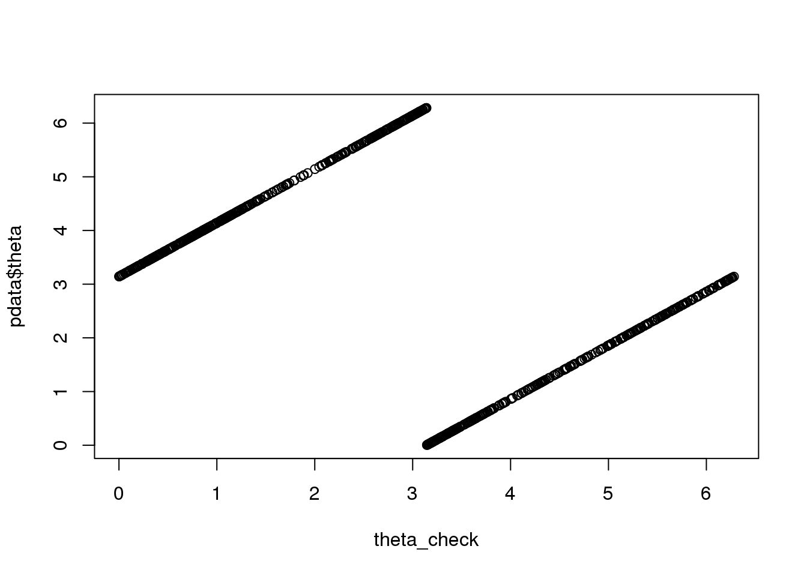

Last updated: 2018-07-14
Code version: eb33ede
library(Biobase)
library(circular)
source("../peco/R/cycle.corr.R")
source("../peco/R/cycle.npreg.R")
source("../peco/R/fit.trendfilter.generic.R")
df <- readRDS(file="../data/eset-final.rds")
pdata <- pData(df)
fdata <- fData(df)
# select endogeneous genes
counts <- exprs(df)[grep("ENSG", rownames(df)), ]
log2cpm.all <- t(log2(1+(10^6)*(t(counts)/pdata$molecules)))
counts <- counts[,order(pdata$theta)]
log2cpm.all <- log2cpm.all[,order(pdata$theta)]
pdata <- pdata[order(pdata$theta),]
theta <- pdata$theta
# select external validation samples
log2cpm.quant <- readRDS("../output/npreg-trendfilter-quantile.Rmd/log2cpm.quant.rds")
#all.equal(colnames(log2cpm.quant), colnames(log2cpm.all))
set.seed(99)
nvalid <- round(ncol(log2cpm.quant)*.15)
ii.valid <- sample(1:ncol(log2cpm.quant), nvalid, replace = F)
ii.nonvalid <- setdiff(1:ncol(log2cpm.quant), ii.valid)
log2cpm.quant.nonvalid <- log2cpm.quant[,ii.nonvalid]
log2cpm.quant.valid <- log2cpm.quant[,ii.valid]
sig.genes <- readRDS("../output/npreg-trendfilter-quantile.Rmd/out.stats.ordered.sig.101.rds")
# expr.sig <- log2cpm.quant.nonvalid[rownames(log2cpm.quant.nonvalid) %in% rownames(sig.genes)[1:10], ]# first check the theta in pdata
pca <- prcomp(cbind(pdata$rfp.median.log10sum.adjust,
pdata$gfp.median.log10sum.adjust), scale=TRUE)
pca_df <- cbind(pca$x[,1],pca$x[,2])
rownames(pca_df) <- rownames(pdata)
theta_check <- as.numeric(coord2rad(pca_df))
theta_check <- 2*pi-theta_check
plot(theta_check, pdata$theta)
names(theta_check) <- rownames(pdata)
dist_to_origin <- sqrt(pca_df[,1]^2+pca_df[,2]^2)
which_out <- rownames(pdata)[which(scale(dist_to_origin) < -1)]
pdata_filt <- pdata[which(scale(dist_to_origin) > -1), ]
theta_filt <- theta_check[which(scale(dist_to_origin) > -1)]
#all.equal(names(theta_filt), rownames(pdata_filt))source("../peco/R/utility.R")
all_dapi <- get.pve(pdata$dapi.median.log10sum.adjust[order(theta_check)])
all_gfp <- get.pve(pdata$gfp.median.log10sum.adjust[order(theta_check)])
all_rfp <- get.pve(pdata$rfp.median.log10sum.adjust[order(theta_check)])
c(all_dapi$pve, all_gfp$pve, all_rfp$pve)
filt_dapi <- get.pve(pdata_filt$dapi.median.log10sum.adjust[order(theta_filt)])
filt_gfp <- get.pve(pdata_filt$gfp.median.log10sum.adjust[order(theta_filt)])
filt_rfp <- get.pve(pdata_filt$rfp.median.log10sum.adjust[order(theta_filt)])
c(filt_dapi$pve, filt_gfp$pve, filt_rfp$pve)
save(all_dapi, all_gfp, all_rfp,
filt_dapi, filt_gfp, filt_rfp,
file = "../output/method-labels-noisy.Rmd/pve.rda")log2cpm.quant.filt.nonvalid <- log2cpm.quant.nonvalid[,
which(!(colnames(log2cpm.quant.nonvalid) %in% which_out))]
expr_sub <- log2cpm.quant.filt.nonvalid[rownames(log2cpm.quant.filt.nonvalid) %in% rownames(sig.genes)[1:10], ]
#all.equal(names(theta_filt), colnames(log2cpm.quant.filt.nonvalid))
# get predicted times
# set training samples
source("../peco/R/primes.R")
source("../peco/R/partitionSamples.R")
parts <- partitionSamples(1:ncol(log2cpm.quant.filt.nonvalid), runs=5,
nsize.each = c(rep(133,4), 134))
part_indices <- parts$partitions
fits_top10_filt <- vector("list", 5)
for (run in 1:5) {
print(run)
# fitting training data
Y_train <- expr_sub[,part_indices[[run]]$train]
theta_train <- theta_filt[match(colnames(Y_train), rownames(pdata))]
names(theta_train) <- colnames(Y_train)
fit.train <- cycle.npreg.insample(Y = Y_train,
theta = theta_train,
ncores=15,
polyorder=2,
method.trend="trendfilter")
# fitting test data
Y_test <- expr_sub[,part_indices[[run]]$test]
theta_test <- theta_filt[match(colnames(Y_test), rownames(pdata))]
names(theta_test) <- colnames(Y_test)
fit.test <- cycle.npreg.outsample(Y_test=Y_test,
sigma_est=fit.train$sigma_est,
funs_est=fit.train$funs_est,
method.grid = "uniform",
method.trend="trendfilter",
ncores=15)
fits_top10_filt[[run]] <- list(fit.train=fit.train,
fit.test=fit.test,
theta_test=theta_test)
}
for (i in 1:5) {
fits_top10_filt[[i]]$theta_est_shift <- rotation(fits_top10_filt[[i]]$theta_test, fits_top10_filt[[i]]$fit.test$cell_times_est)$y2shift
}
saveRDS(fits_top10_filt, file = "../output/method-labels-noisy.Rmd/fits_top101_filt.rds")
#fits_top101 <- readRDS(file = "../output/method-train-labels.Rmd/fits_top101.rds")
diff_time <- lapply(1:5, function(i) {
pmin(abs(fits_top10_filt[[i]]$theta_est_shift-fits_top10_filt[[i]]$theta_test),
abs(fits_top10_filt[[i]]$theta_est_shift-(2*pi-fits_top10_filt[[i]]$theta_test)))
})
source("../peco/R/utility.R")
pve <- lapply(1:length(fits_top10_filt), function(i) {
dap <- pdata$dapi.median.log10sum.adjust[match(names(fits_top10_filt[[i]]$theta_test),
rownames(pdata))]
get.pve(dap[order(fits_top10_filt[[i]]$theta_est_shift)])
})
save(diff_time, pve,
file = "../output/method-train-labels.Rmd/modelresults_top10_filt.rda")data_training <- readRDS("../data/results/data_training.rds")
#saveRDS(data_withheld, file="data/results/data_withheld.rds")
fold_indices <- readRDS("../data/results/fold_indices.rds")
fits_top10 <- vector("list", 5)
for (run in 1:5) {
print(run)
# fitting training data
Y_train <- data_training$log2cpm.quant.nonvalid[,fold_indices[[run]]$train]
theta_train <- data_training$theta.nonvalid[fold_indices[[run]]$train]
#names(theta_train) <- colnames(Y_train)
fit.train <- cycle.npreg.insample(Y = Y_train,
theta = theta_train,
ncores=12,
polyorder=2,
method.trend="trendfilter")
# fitting test data
Y_test <- data_training$log2cpm.quant.nonvalid[,fold_indices[[run]]$test]
theta_test <- data_training$theta.nonvalid[fold_indices[[run]]$test]
# names(theta_test) <- colnames(Y_test)
fit.test <- cycle.npreg.outsample(Y_test=Y_test,
sigma_est=fit.train$sigma_est,
funs_est=fit.train$funs_est,
method.grid = "uniform",
method.trend="trendfilter",
ncores=15)
fits_top10[[run]] <- list(fit.train=fit.train,
fit.test=fit.test,
theta_test=theta_test)
}
for (i in 1:5) {
fits_top10[[i]]$theta_est_shift <- rotation(fits_top10[[i]]$theta_test, fits_top10[[i]]$fit.test$cell_times_est)$y2shift
}
saveRDS(fits_top10, file = "../output/method-labels-noisy.Rmd/fits_top10.rds")
#fits_top101 <- readRDS(file = "../output/method-train-labels.Rmd/fits_top101.rds")
diff_time <- lapply(1:5, function(i) {
pmin(abs(fits_top10[[i]]$theta_est_shift-fits_top10[[i]]$theta_test),
abs(fits_top10[[i]]$theta_est_shift-(2*pi-fits_top10[[i]]$theta_test)))
})
source("../peco/R/utility.R")
pve <- lapply(1:length(fits_top10), function(i) {
dap <- pdata$dapi.median.log10sum.adjust[match(names(fits_top10[[i]]$theta_test),rownames(pdata))]
get.pve(dap[order(fits_top10[[i]]$theta_est_shift)])
})
save(diff_time, pve,
file = "../output/method-labels-noisy.Rmd/modelresults_top10.rda")load("../output/method-labels-noisy.Rmd/modelresults_top10.rda")
mean(sapply(diff_time, mean))/2/pi[1] 0.08756486mean(sapply(pve, "[[", 1))[1] 0.1411442pve[[1]]
[[1]]$pve
[1] 0.1181483
[[1]]$pval
[1] 0.4422439
[[2]]
[[2]]$pve
[1] 0.1738823
[[2]]$pval
[1] 0.2432471
[[3]]
[[3]]$pve
[1] 0.05928042
[[3]]$pval
[1] 0.7087245
[[4]]
[[4]]$pve
[1] 0.1447315
[[4]]$pval
[1] 0.3394248
[[5]]
[[5]]$pve
[1] 0.2096787
[[5]]$pval
[1] 0.1507302sessionInfo()R version 3.4.3 (2017-11-30)
Platform: x86_64-pc-linux-gnu (64-bit)
Running under: Scientific Linux 7.4 (Nitrogen)
Matrix products: default
BLAS/LAPACK: /software/openblas-0.2.19-el7-x86_64/lib/libopenblas_haswellp-r0.2.19.so
locale:
[1] LC_CTYPE=en_US.UTF-8 LC_NUMERIC=C
[3] LC_TIME=en_US.UTF-8 LC_COLLATE=en_US.UTF-8
[5] LC_MONETARY=en_US.UTF-8 LC_MESSAGES=en_US.UTF-8
[7] LC_PAPER=en_US.UTF-8 LC_NAME=C
[9] LC_ADDRESS=C LC_TELEPHONE=C
[11] LC_MEASUREMENT=en_US.UTF-8 LC_IDENTIFICATION=C
attached base packages:
[1] parallel stats graphics grDevices utils datasets methods
[8] base
other attached packages:
[1] circular_0.4-93 Biobase_2.38.0 BiocGenerics_0.24.0
loaded via a namespace (and not attached):
[1] Rcpp_0.12.17 mvtnorm_1.0-8 digest_0.6.15 rprojroot_1.3-2
[5] backports_1.1.2 git2r_0.21.0 magrittr_1.5 evaluate_0.10.1
[9] stringi_1.1.6 boot_1.3-20 rmarkdown_1.10 tools_3.4.3
[13] stringr_1.2.0 yaml_2.1.16 compiler_3.4.3 htmltools_0.3.6
[17] knitr_1.20 This R Markdown site was created with workflowr